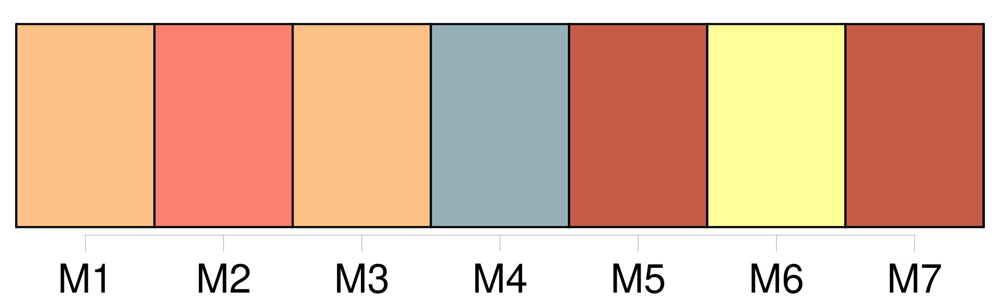
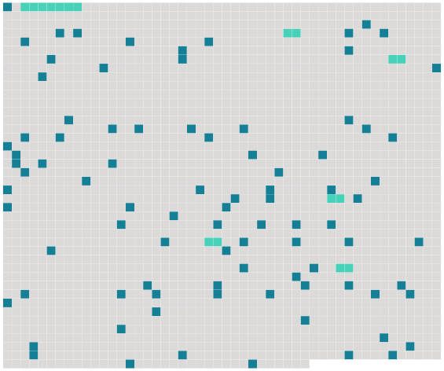

Longueur nb maillons : 95 mentions |
 |
[Lui] était [un ami d'autrefois, resté garçon] , un ami de toutes les semaines, un compagnon de voyage dans l'existence. [4 phrases]
La vieille femme, avec un petit cri, se dressa comme pour fuir, tandis que [lui] , à coups de botte, rejetait dans la cheminée l'énorme charbon et [ratissait] de [sa] semelle toutes les éclaboussures ardentes répandues autour. Quand le désastre fut réparé, une forte odeur de roussi se répandit ; et [l'homme] se rasseyant en face de [son] amie, la [regarda] en souriant : « Et voilà, dit [-il] en montrant la bûche replacée dans l'âtre, voilà pourquoi [je] ne me suis jamais marié.
»
» [1 phrases] [Mes] anciens camarades se sont souvent étonnés du froid survenu tout à coup entre un de [mes] meilleurs amis qui s'appelait, de son petit nom, Julien, et [moi] Ils ne comprenaient point comment deux intimes, deux inséparables comme nous étions, avaient pu tout à coup devenir presque étrangers [l'un] à l'autre. [1 phrases] Lui et [moi] , nous habitions ensemble, autrefois. [1 phrases]
Un soir, en rentrant, il [m'] annonça son mariage. [Je] reçus un coup dans la poitrine, comme s'il m'avait volé ou trahi. [5 phrases] Enfin, [mon] ami Julien se maria. [1 phrases] D'abord, [j'] allais peu dans la maison, craignant de gêner leur tendresse, me sentant de trop entre eux.
Ils semblaient pourtant [m'] attirer, [m'] appeler sans cesse, et [m'] aimer.
Peu à peu [je] me laissai séduire par le charme doux de cette vie commune ; et [je] dînais souvent chez eux ; et souvent, rentré chez [moi] la nuit, [je] songeais à faire comme lui, à prendre une femme, trouvant bien triste à présent [ma] maison vide. [1 phrases] Or, un soir, Julien [m'] écrivit de venir dîner. [J'] y allai. [2 phrases] J'ai compté sur [toi] pour tenir compagnie à Berthe.
» [Je] lui serrai la main : « Vous êtes gentille comme tout. » Et [je] sentis sur [mes] doigts une amicale et longue pression. [Je] n'y pris pas garde. [1 phrases] Aussitôt qu'il fut parti, une sorte de gêne singulière naquit brusquement entre sa femme et [moi] [1 phrases] [Je] parlai d'abord de choses vagues, de ces choses insignifiantes dont on emplit les silences embarrassants. Elle ne répondit rien et restait en face de [moi] , de l'autre côté de la cheminée, la tête baissée, le regard indécis, un pied tendu vers la flamme, comme perdue en une difficile méditation. Quand [je] fus à sec d'idées banales, [je] me tus. [1 phrases]
Et puis, [je] sentais du nouveau dans l'air, [je] sentais de l'invisible, un [je] ne sais quoi impossible à exprimer, cet avertissement mystérieux qui vous prévient des intentions secrètes, bonnes ou mauvaises, d'une autre personne à votre égard. [1 phrases] Puis Berthe [me] dit : « [Mettez] donc une bûche au feu, [mon ami] , [vous] voyez bien qu'il va s'éteindre.
» [J'] ouvris le coffre à bois, placé juste comme le vôtre, et [je] pris une bûche, la plus grosse bûche, que [je] plaçai en pyramide sur les autres morceaux de bois aux trois quarts consumés. [2 phrases] La jeune femme releva sur [moi] ses yeux, des yeux qui me parurent étranges. [2 phrases] Puis tout à coup, [me] regardant bien en face : « Qu'est -ce que [vous] feriez si une femme [vous] disait qu'elle [vous] aime??
» [1 phrases]
» Elle se tut, puis reprit :
»
« [Racontez] -moi ça, » dit -elle.
[Je] lui racontai une histoire quelconque. Elle [m'] écoutait attentivement, avec des marques fréquentes d'improbation et de mépris ; et soudain : « Non, [vous] n'y entendez rien. [2 phrases]
»
Elle avait pris, en parlant, un petit air indifférent, sainte-nitouche ; et, appuyée sur les coussins, elle s'était allongée, couchée, la tête contre [mon] épaule, la robe un peu relevée, laissant voir un bas de soie rouge que les éclats du foyer enflammaient par instants. Au bout d'une minute : « Je [vous] fais peur », dit -elle. [Je] protestai. Elle s'appuya tout à fait contre [ma] poitrine et, sans [me] regarder : « Si je [vous] disais, moi, que je [vous] aime, que feriez -vous??
» Et avant que [j'] eusse pu trouver [ma] réponse, ses bras avaient pris [mon] cou, avaient attiré brusquement [ma] tête, et ses lèvres joignaient les miennes. [1 phrases] [ma] chère amie, [je] vous réponds que [je] ne m'amusais pas!! [4 phrases] Non, cela ne [m'] allait guère. [4 phrases] que celui qui n'a jamais senti sur sa bouche le baiser profond d'une femme prête, à se donner, [me] jette la première pierre... [4 phrases] [j'] étais... [4 phrases] [Je] me précipitai comme un fou, et pendant que [je] repoussais dans la cheminée le tison sauveur, la porte brusquement s'ouvrit!! [2 phrases]
» [1 phrases] Or, [je] fis en sorte de n'être plus repris dans une situation pareille, jamais, jamais. Puis [je] m'aperçus que Julien [me] battait froid, comme on dit.
Sa femme évidemment sapait notre amitié ; et peu à peu il [m'] éloigna de chez lui ; et nous avons cessé de nous voir. [Je] ne me suis point marié. |
 |
Il est possible de télécharger la ressource sur la page Ortolang |
Si vous avez des questions ou vous voyez des erreurs, merci d'envoyer un mail à silvia.federzoni89@gmail.com |